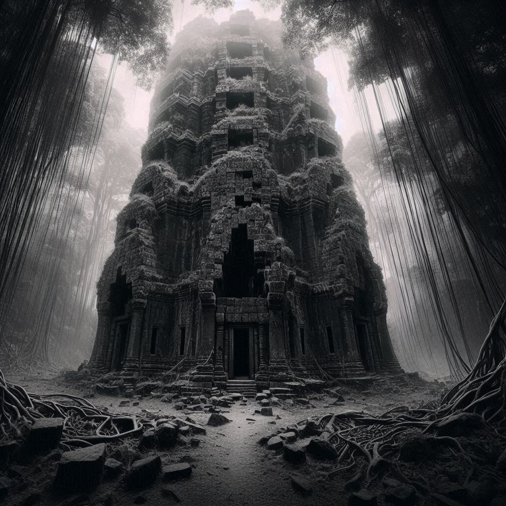

Capítulo 13: O mestre das Sombras
De repente, eles emergiram de entre as árvores e se encontraram diante de uma área pequena e aberta. No centro, erguia-se uma torre imponente, com pedras negras e antigas, envoltas por um brilho suave que parecia emanar de dentro das rachaduras. As paredes da torre eram irregulares, como se o tempo e as forças do mundo tivessem tentado, mas falhado, em desgastá-la. Lianas e trepadeiras rastejavam pelas laterais da estrutura, como se tentassem reivindicar o que o tempo não conseguiu. No topo, janelas estreitas e sombrias estavam abertas, como olhos vigilantes que os observavam, e no centro da torre, uma porta de madeira maciça, coberta de inscrições indecifráveis, aguardava por eles. Uma energia sutil e ancestral envolvia a área, carregada com o peso de segredos há muito enterrados e jamais revelados.
Shiro e Ive trocaram olhares maravilhados diante da visão. "O que é isso?", perguntou Shiro, sua voz contendo um tom de reverência.
Ive sacudiu a cabeça, incapaz de conter sua curiosidade. "Não faço ideia", admitiu ela. "Mas parece ser um lugar cheio de segredos."
Enquanto observavam a torre, uma sensação de inquietação começou a se instalar em suas mentes. Eles podiam sentir a presença de algo antigo e poderoso, algo que os observava silenciosamente de dentro das sombras da torre.
Com corações acelerados, Shiro e Ive deram um passo adiante, prontos para explorar as profundezas da torre e descobrir os segredos que ela guardava. O que quer que os aguardasse lá dentro, eles sabiam que sua jornada estava apenas começando e que novas aventuras e desafios os esperavam além das paredes da torre antiga.